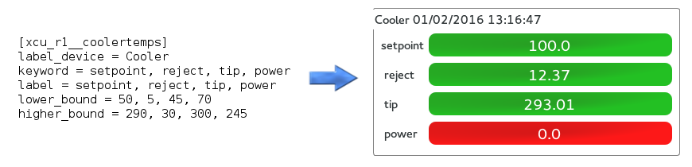
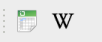

ics_sps_engineering_monitorData¶
ics_sps_engineering_monitorData is a monitoring tools which gives a global view of all Camera unit status.
In this guide, You will be shown how to configure it properly and its differents functionalities will be detailed.
How to run ?¶
First, If you’re planning to begin a real-time data monitoring, please be sure that :
- Tron is started
- Ics_archiver is running
Launch the following command from a terminal :
python main.py ip_database port_database
Example : python main.py 10.1.1.1 5432
By default if arguments are not provided :
- ip_database : localhost
- port_database : 5432
Main scren¶
Once you start, you can see the main screen with its differents widgets
It displays every status of the Camera unit with its matching timestamp.
Time out¶

This label has two states :
- ACQUISITION : All data are up-to-date.
- Time out on device : No data coming in for this device since 90 seconds
This time out limit value can be edited in myqgroupbox.py
Alarms¶

These buttons are showing alarms on criticals devices when unexpected value are reached :
- Ion gauge pressure < 1e-4 Torr
- Turbo speed < 90000 RPM
- Gatevalve closed
- Cooler power < 70 W or > 245 W.
These threshold values can be modified in window.py
You can click also click on each button to get more details.
Configuration¶
This software has been made to be dynamic, it relies on an editable configuration file curve_config.cfg.
This file is located in ics_sps_engineering_monitorData/config
In the database, the archiver follows always the same structure :
One table per device and one field per keyword.
Let’s take a device as an example : The Cooler which has four keywords : setpoint, reject, tip, power

- [xcu_r1__coolertemps] : [the tablename in your database]
- label_device : it will be the name of the Box
- keyword : fieldnames in your database (separated with coma)
- label : name of your curves (separated with coma)
- lower_bound : minimum acceptable value (separated with coma)
- higher_bound : maximum acceptable value (separated with coma)
Functionalities¶

All devices are sorted in boxes containing its timestamp and keywords.
Each keyword is represented by a two states label which evolves according to the current value :
- Green : Value is within the boundaries
- Red : Value is outside the boundaries
Toolbar¶
You can find two functions on the upper toolbar
- extract to CSV : Extract device data within specified date
- export to Wiki : ...